pacman::p_load(sf, spatstat, terra, tmap, tidyverse)Hands-on Exercise 2
Spatial Point Patterns Analysis
Two datasets, both from data.gov.sg Child Care Services, Master Plan 2019 subzones sf spatstat terra tmap tidyverse
1 Getting Started
The question behind both chapters is simple. Are childcare centres spread evenly across Singapore, and if not, where do they bunch up.
Chapter 4 answers the first half by looking at how many centres sit in each part of the map. Chapter 5 answers it a different way, by looking at how far each centre is from its neighbours. The two get at the same thing from different directions, and the readings turn out to have something to say about whether they can be separated at all.
1.1 Installing and Loading R Packages
Five packages this time. sf for the vector data, spatstat for everything to do with point patterns, terra to turn spatstat’s raster output into something tmap can draw, tmap for the maps and tidyverse for the wrangling.
WarningIssue I hit
Loading terra after spatstat prints a masking warning. terra takes over eight names including rescale and area, both of which spatstat also uses.
It matters because this exercise calls rescale() on point patterns a lot. Writing rescale.ppp() in full, as the book does, sidesteps it. I did not understand why the book was being so explicit until I read that warning properly.
2 Part 1, First-order Analysis
First order means intensity. How many points per unit of area, and does that number change as you move across the map.
2.1 Importing the Data
data.gov.sg offers both KML and geojson. I took the geojson, and that decision removes a chunk of the book’s code.
childcare_sf <- st_read("data/geospatial/ChildCareServices.geojson") %>%
st_transform(crs = 3414)Reading layer `CHILDCARE' from data source
`/Users/czxtom/Documents/Programming/GAA/ISSS626-GAA/Hands-on_Ex/Hands-on_Ex02/data/geospatial/ChildCareServices.geojson'
using driver `GeoJSON'
Simple feature collection with 1925 features and 16 fields
Geometry type: POINT
Dimension: XY
Bounding box: xmin: 103.6878 ymin: 1.247759 xmax: 103.9897 ymax: 1.462134
Geodetic CRS: WGS 84names(childcare_sf) [1] "OBJECTID" "ADDRESSBLOCKHOUSENUMBER"
[3] "ADDRESSBUILDINGNAME" "ADDRESSPOSTALCODE"
[5] "ADDRESSSTREETNAME" "ADDRESSTYPE"
[7] "DESCRIPTION" "HYPERLINK"
[9] "LANDXADDRESSPOINT" "LANDYADDRESSPOINT"
[11] "NAME" "PHOTOURL"
[13] "ADDRESSFLOORNUMBER" "INC_CRC"
[15] "FMEL_UPD_D" "ADDRESSUNITNUMBER"
[17] "geometry"
NoteLearning diary
Same finding as Exercise 1. The book reads the KML, which buries every attribute in an HTML table inside a Description field, then writes an extract_kml_field() helper with rvest to dig them back out. The geojson just has the columns.
So I skip the helper and drop rvest from the package list. Two other differences. The KML is XYZ, which is why the book calls st_zm(drop = TRUE) to strip the elevation, and my geojson is already XY so that step is unnecessary. And there is a DESCRIPTION column here holding the literal text “Child Care Services”, which is not the same thing as the KML’s Description blob at all.
mpsz_sf <- st_read("data/geospatial/MasterPlan2019SubzoneBoundaryNoSeaGEOJSON.geojson") %>%
st_transform(crs = 3414)Reading layer `URA_MP19_SUBZONE_NO_SEA_PL' from data source
`/Users/czxtom/Documents/Programming/GAA/ISSS626-GAA/Hands-on_Ex/Hands-on_Ex02/data/geospatial/MasterPlan2019SubzoneBoundaryNoSeaGEOJSON.geojson'
using driver `GeoJSON'
Simple feature collection with 332 features and 13 fields
Geometry type: MULTIPOLYGON
Dimension: XY
Bounding box: xmin: 103.6057 ymin: 1.158699 xmax: 104.0885 ymax: 1.470775
Geodetic CRS: WGS 84The offshore subzones have to go before anything else. They sit far from the mainland and would stretch the observation window across a lot of empty sea, which drags every density estimate down.
mpsz_cl <- mpsz_sf %>%
filter(SUBZONE_N != "SOUTHERN GROUP",
PLN_AREA_N != "WESTERN ISLANDS",
PLN_AREA_N != "NORTH-EASTERN ISLANDS")
nrow(mpsz_sf)[1] 332nrow(mpsz_cl)[1] 3272.1.1 Mapping both layers
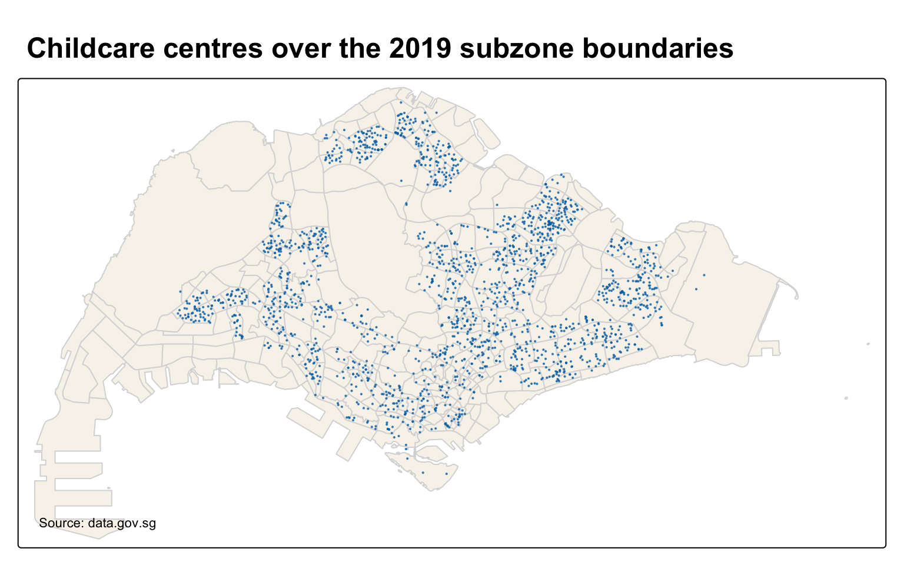
tm_shape(mpsz_cl) +
tm_polygons(col = "grey85", fill = "#F7F4EC") +
tm_shape(childcare_sf) +
tm_dots(size = 0.02, fill = "#0072B2", fill_alpha = 0.55) +
tm_title("Childcare centres over the 2019 subzone boundaries") +
tm_credits("Source: data.gov.sg", position = c("left", "bottom"))Both layers land on the same extent, which is the check that they share a coordinate system.
2.2 Converting to spatstat Objects
spatstat does not speak sf. It wants a ppp for the points and an owin for the region they are allowed to occupy.
childcare_ppp <- as.ppp(childcare_sf)
class(childcare_ppp)[1] "ppp"summary(childcare_ppp)Marked planar point pattern: 1925 points
Average intensity 2.417323e-06 points per square unit
Coordinates are given to 11 decimal places
Mark variables: OBJECTID, ADDRESSBLOCKHOUSENUMBER, ADDRESSBUILDINGNAME,
ADDRESSPOSTALCODE, ADDRESSSTREETNAME, ADDRESSTYPE, DESCRIPTION, HYPERLINK,
LANDXADDRESSPOINT, LANDYADDRESSPOINT, NAME, PHOTOURL, ADDRESSFLOORNUMBER,
INC_CRC, FMEL_UPD_D, ADDRESSUNITNUMBER
Summary:
OBJECTID ADDRESSBLOCKHOUSENUMBER ADDRESSBUILDINGNAME ADDRESSPOSTALCODE
Min. :24641 Length :1925 Length :1925 Length :1925
1st Qu.:25122 N.unique : 0 N.unique : 0 N.unique :1739
Median :25603 N.blank : 0 N.blank : 0 N.blank : 0
Mean :25603 Min.nchar: NA Min.nchar: NA Min.nchar: 5
3rd Qu.:26084 Max.nchar: NA Max.nchar: NA Max.nchar: 6
Max. :26565 NAs :1925 NAs :1925
ADDRESSSTREETNAME ADDRESSTYPE DESCRIPTION HYPERLINK
Length :1925 Length :1925 Length :1925 Length :1925
N.unique :1923 N.unique : 0 N.unique : 1 N.unique : 0
N.blank : 0 N.blank : 0 N.blank : 0 N.blank : 0
Min.nchar: 25 Min.nchar: NA Min.nchar: 19 Min.nchar: NA
Max.nchar: 100 Max.nchar: NA Max.nchar: 19 Max.nchar: NA
NAs :1925 NAs :1925
LANDXADDRESSPOINT LANDYADDRESSPOINT NAME PHOTOURL
Length :1925 Length :1925 Length :1925 Length :1925
N.unique : 0 N.unique : 0 N.unique :1572 N.unique : 0
N.blank : 0 N.blank : 0 N.blank : 0 N.blank : 0
Min.nchar: NA Min.nchar: NA Min.nchar: 9 Min.nchar: NA
Max.nchar: NA Max.nchar: NA Max.nchar: 74 Max.nchar: NA
NAs :1925 NAs :1925 NAs :1925
ADDRESSFLOORNUMBER INC_CRC FMEL_UPD_D ADDRESSUNITNUMBER
Length :1925 Length :1925 Length :1925 Length :1925
N.unique : 0 N.unique :1925 N.unique : 1 N.unique : 0
N.blank : 0 N.blank : 0 N.blank : 0 N.blank : 0
Min.nchar: NA Min.nchar: 16 Min.nchar: 14 Min.nchar: NA
Max.nchar: NA Max.nchar: 16 Max.nchar: 14 Max.nchar: NA
NAs :1925 NAs :1925
Window: rectangle = [11810.03, 45404.24] x [25596.33, 49300.88] units
(33590 x 23700 units)
Window area = 796335000 square unitssg_owin <- as.owin(mpsz_cl)
childcareSG_ppp <- childcare_ppp[sg_owin]
childcareSG_pppMarked planar point pattern: 1925 points
Mark variables:
OBJECTID ADDRESSBLOCKHOUSENUMBER ADDRESSBUILDINGNAME ADDRESSPOSTALCODE
ADDRESSSTREETNAME ADDRESSTYPE DESCRIPTION HYPERLINK LANDXADDRESSPOINT
LANDYADDRESSPOINT NAME PHOTOURL ADDRESSFLOORNUMBER INC_CRC FMEL_UPD_D
ADDRESSUNITNUMBER
window: polygonal boundary
enclosing rectangle: [2667.54, 55941.94] x [21448.47, 50256.33] units
NoteLearning diary
The owin matters more than it looks. Every function later in this exercise measures distances from each point to its neighbours, and near the edge of the region some of those neighbours fall outside and never get counted. That biases the answer downward.
Floch, Marcon and Puech call this the edge effect and spend a section on it. It is the reason Gest(), Kest() and the rest all take a correction argument. Before I read that, I would have treated those arguments as noise.
any(duplicated(childcareSG_ppp))[1] FALSEWorth checking. Duplicated points break several of the distance methods, since a nearest neighbour at distance zero is not something the theory allows for.
2.3 Clark-Evans Test
The Clark-Evans index R compares the average nearest neighbour distance to what it would be under complete spatial randomness. Below 1 means clustered, above 1 means spread out, around 1 means random.
- H0: childcare centres are randomly distributed.
- H1: childcare centres are not randomly distributed.
clarkevans.test(childcareSG_ppp,
correction = "none",
alternative = "clustered")
Clark-Evans test
No edge correction
Z-test
data: childcareSG_ppp
R = 0.53532, p-value < 2.2e-16
alternative hypothesis: clustered (R < 1)Now the same test with the p-value from simulation rather than from a normal approximation.
clarkevans.test(childcareSG_ppp,
correction = "none",
alternative = "clustered",
method = "MonteCarlo",
nsim = 99)
Clark-Evans test
No edge correction
Monte Carlo test based on 99 simulations of CSR with fixed n
data: childcareSG_ppp
R = 0.53532, p-value = 0.01
alternative hypothesis: clustered (R < 1)
ImportantCheck that caught it
The two p-values are not the same and they cannot be. The Monte Carlo version compares R against 99 simulated patterns, so the smallest p-value it can possibly report is 0.01. It is not more or less significant than the first, it is a different test with a floor set by how many simulations I asked for.
The required reading gives the rule. For a two-sided test, alpha works out as 2 divided by the number of simulations plus 1, so 39 simulations gives 5 percent. Every simulation count in this exercise is therefore a choice about alpha, and the book changes it between sections without comment.
CautionWhere I disagree with the exercise
R comes out well below 1 and the p-value is tiny, so the test says clustered. I am not sure that tells me much.
The null here is that childcare centres could be anywhere in Singapore with equal probability. That includes reservoirs, the airport, industrial land and military areas. Childcare centres go where children live.
Floch et al. make exactly this point about pharmacies in France, whose locations are regulated by population, and conclude the CSR reference “does not appear to be the most relevant in this case”. I think the same applies here. I come back to it in Part 3 with a null that is not a strawman.
2.4 Kernel Density Estimation
Clark-Evans gives one number for the whole island. KDE gives a surface, so it can show where.
2.4.1 Automatic bandwidth selection
kde_childcareSG_bw <- density(childcareSG_ppp,
sigma = bw.diggle,
edge = TRUE,
kernel = "gaussian")plot(kde_childcareSG_bw,
main = "Childcare density, bw.diggle bandwidth")bw.diggle(childcareSG_ppp) sigma
295.9712 The density values come out in points per square metre, which is why the legend is full of numbers like 3e-05. Rescaling to kilometres fixes the readability without changing anything real.
childcareSG_ppp.km <- rescale.ppp(childcareSG_ppp, 1000, "km")
kde_childcareSG.km <- density(childcareSG_ppp.km,
sigma = bw.diggle,
edge = TRUE,
kernel = "gaussian")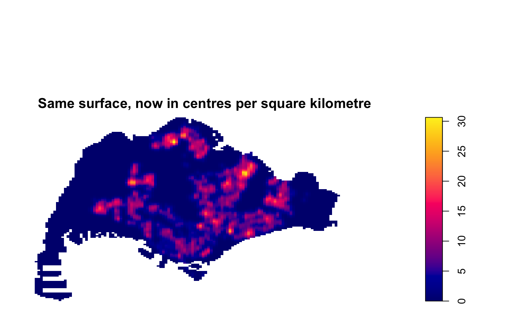
plot(kde_childcareSG.km,
main = "Same surface, now in centres per square kilometre")2.4.2 Comparing the four bandwidth rules
bw.CvL(childcareSG_ppp.km) sigma
4.357209 bw.scott(childcareSG_ppp.km) sigma.x sigma.y
2.159749 1.396455 bw.ppl(childcareSG_ppp.km) sigma
0.378997 bw.diggle(childcareSG_ppp.km) sigma
0.2959712 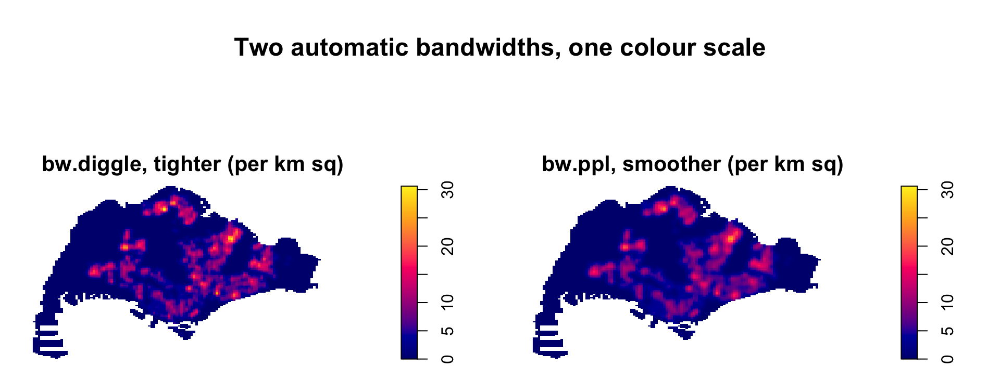
kde_ppl <- density(childcareSG_ppp.km, sigma = bw.ppl,
edge = TRUE, kernel = "gaussian")
par(mfrow = c(1, 2), mar = c(2, 2, 3, 4))
plot(kde_childcareSG.km, main = "bw.diggle, tighter")
plot(kde_ppl, main = "bw.ppl, smoother")
par(mfrow = c(1, 1))
NoteLearning diary
The four rules disagree by a factor of about fifteen, 4.36 from CvL against 0.30 from diggle. CvL gives the widest bandwidth and diggle the narrowest, and the maps they produce say different things about the city.
Baddeley recommends ppl when the pattern is mostly tight clusters, and diggle when you are hunting one cluster in noise. Either way this is a choice I am making, not something the data settled. The reading says the same thing more bluntly, that the kernel barely matters and the bandwidth matters enormously.
Same problem as picking the classification method in Exercise 1. It looks like a setting you leave alone, and it is really a decision about what the map says.
2.4.3 Comparing kernel shapes
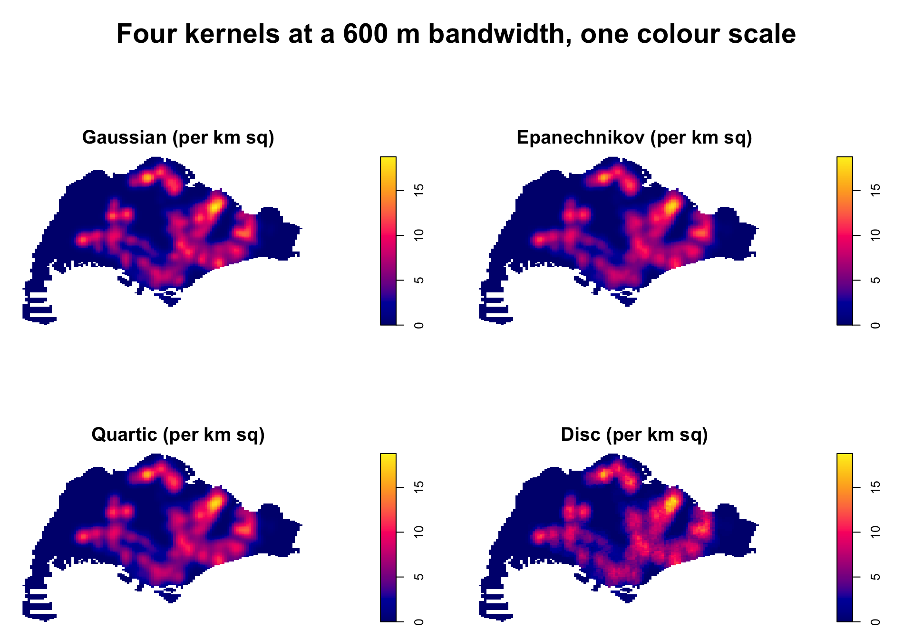
par(mfrow = c(2, 2), mar = c(2, 2, 3, 4))
plot(density(childcareSG_ppp.km, sigma = 0.6, edge = TRUE,
kernel = "gaussian"), main = "Gaussian")
plot(density(childcareSG_ppp.km, sigma = 0.6, edge = TRUE,
kernel = "epanechnikov"), main = "Epanechnikov")
plot(density(childcareSG_ppp.km, sigma = 0.6, edge = TRUE,
kernel = "quartic"), main = "Quartic")
plot(density(childcareSG_ppp.km, sigma = 0.6, edge = TRUE,
kernel = "disc"), main = "Disc")
par(mfrow = c(1, 1))Holding the bandwidth at 0.6 and swapping the kernel, the four maps come out near enough identical. Floch et al. said the kernel choice has limited impact, and this is that claim made visible.
2.5 Fixed and Adaptive Bandwidth
A single bandwidth over the whole island assumes the pattern is equally busy everywhere. It is not. Adaptive bandwidth narrows the window where points are dense and widens it where they are sparse.
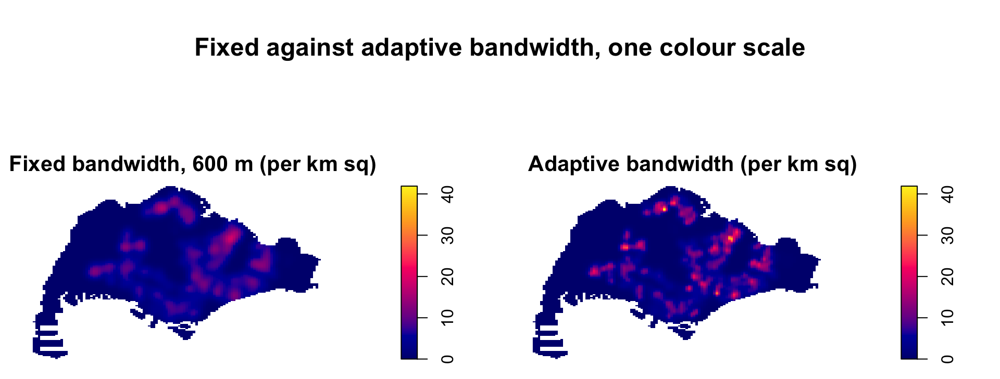
kde_fb <- density(childcareSG_ppp.km, sigma = 0.6,
edge = TRUE, kernel = "gaussian")
kde_ab <- adaptive.density(childcareSG_ppp.km, method = "kernel")
par(mfrow = c(1, 2), mar = c(2, 2, 3, 4))
plot(kde_fb, main = "Fixed bandwidth, 600 m")
plot(kde_ab, main = "Adaptive bandwidth")
par(mfrow = c(1, 1))2.6 A Cartographic KDE Map
spatstat’s im object is not something tmap can draw. terra converts it.
kde_terra <- rast(kde_childcareSG.km)
crs(kde_terra) <- "EPSG:3414"
kde_terraclass : SpatRaster
size : 128, 128, 1 (nrow, ncol, nlyr)
resolution : 0.4162063, 0.2250614 (x, y)
extent : 2.667538, 55.94194, 21.44847, 50.25633 (xmin, xmax, ymin, ymax)
coord. ref. : SVY21 / Singapore TM (EPSG:3414)
source(s) : memory
name : lyr.1
min value : -0
max value : 30.636981
unit : km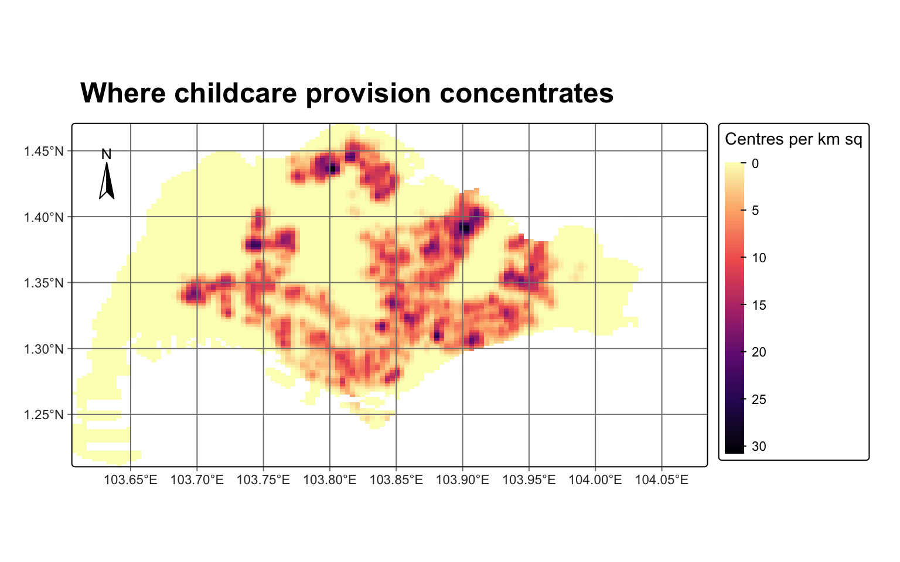
tm_shape(kde_terra) +
tm_raster(col.scale = tm_scale_continuous(values = "viridis"),
col.legend = tm_legend(title = "Centres per km sq",
position = tm_pos_in("right", "bottom"),
bg.color = "white", bg.alpha = 0.7,
frame = TRUE)) +
tm_graticules(labels.size = 0.7) +
tm_compass() +
tm_title("Where childcare provision concentrates") +
tm_layout(scale = 1.0)2.7 Four Planning Areas
The island-wide view flattens a lot. Four planning areas, chosen by the book, at a scale where individual centres are visible.
pg <- mpsz_cl %>% filter(PLN_AREA_N == "PUNGGOL")
tm <- mpsz_cl %>% filter(PLN_AREA_N == "TAMPINES")
ck <- mpsz_cl %>% filter(PLN_AREA_N == "CHOA CHU KANG")
jw <- mpsz_cl %>% filter(PLN_AREA_N == "JURONG WEST")childcare_pg_ppp <- childcare_ppp[as.owin(pg)]
childcare_tm_ppp <- childcare_ppp[as.owin(tm)]
childcare_ck_ppp <- childcare_ppp[as.owin(ck)]
childcare_jw_ppp <- childcare_ppp[as.owin(jw)]
childcare_pg_ppp.km <- rescale.ppp(childcare_pg_ppp, 1000, "km")
childcare_tm_ppp.km <- rescale.ppp(childcare_tm_ppp, 1000, "km")
childcare_ck_ppp.km <- rescale.ppp(childcare_ck_ppp, 1000, "km")
childcare_jw_ppp.km <- rescale.ppp(childcare_jw_ppp, 1000, "km")tibble(
area = c("Punggol", "Tampines", "Choa Chu Kang", "Jurong West"),
centres = c(npoints(childcare_pg_ppp), npoints(childcare_tm_ppp),
npoints(childcare_ck_ppp), npoints(childcare_jw_ppp))
)# A tibble: 4 × 2
area centres
<chr> <int>
1 Punggol 72
2 Tampines 117
3 Choa Chu Kang 74
4 Jurong West 110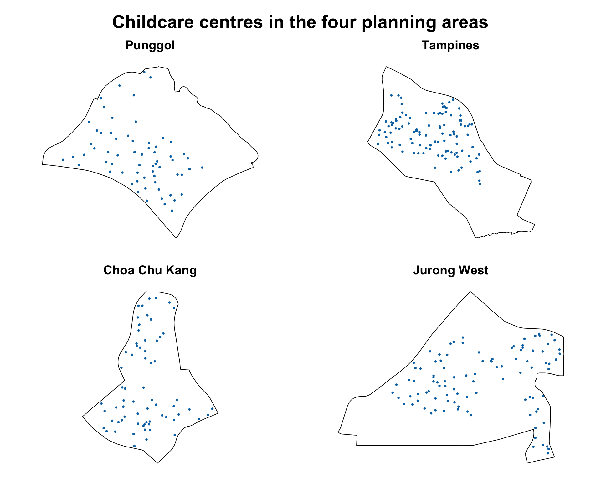
par(mfrow = c(2, 2), mar = c(1, 1, 3, 1))
plot(unmark(childcare_pg_ppp.km), main = "Punggol", pch = 20, cex = 0.7, cols = "#0072B2")
plot(unmark(childcare_tm_ppp.km), main = "Tampines", pch = 20, cex = 0.7, cols = "#0072B2")
plot(unmark(childcare_ck_ppp.km), main = "Choa Chu Kang", pch = 20, cex = 0.7, cols = "#0072B2")
plot(unmark(childcare_jw_ppp.km), main = "Jurong West", pch = 20, cex = 0.7, cols = "#0072B2")
par(mfrow = c(1, 1))2.7.1 Clark-Evans by planning area
clarkevans.test(childcare_ck_ppp, correction = "none",
alternative = "two.sided", nsim = 999)
Clark-Evans test
No edge correction
Z-test
data: childcare_ck_ppp
R = 0.84097, p-value = 0.008866
alternative hypothesis: two-sidedclarkevans.test(childcare_tm_ppp, correction = "none",
alternative = "two.sided", nsim = 999)
Clark-Evans test
No edge correction
Z-test
data: childcare_tm_ppp
R = 0.66817, p-value = 6.58e-12
alternative hypothesis: two-sided
NoteLearning diary
Note the alternative changed from "clustered" to "two.sided" between the island test and these two. A one-sided test can only find clustering, so it cannot tell you if something is unusually spread out. Two-sided can go either way but needs a stronger signal for the same p-value.
Neither the book nor I flagged this at first. Deciding the direction of the test before you look is part of the test, not a formatting detail.
2.7.2 KDE by planning area
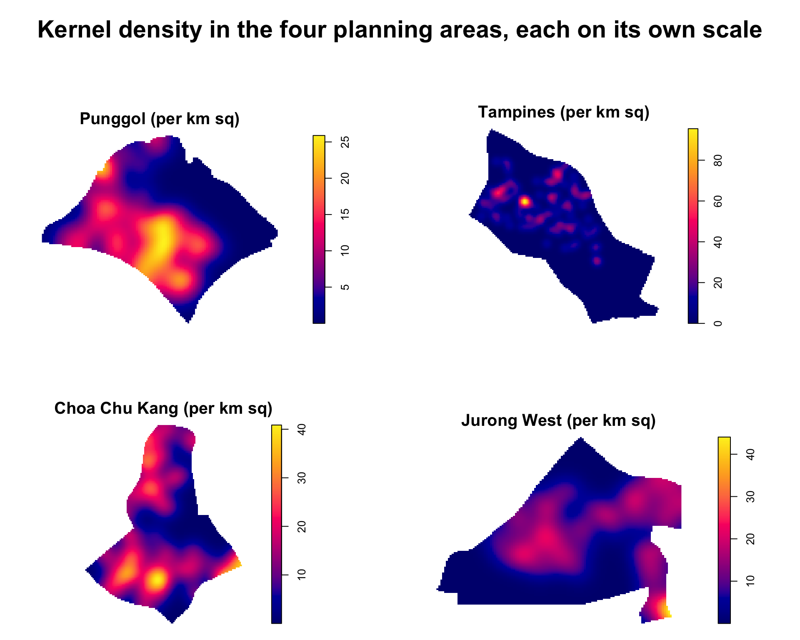
par(mfrow = c(2, 2), mar = c(2, 2, 3, 4))
plot(density(childcare_pg_ppp.km, sigma = bw.diggle, edge = TRUE,
kernel = "gaussian"), main = "Punggol")
plot(density(childcare_tm_ppp.km, sigma = bw.diggle, edge = TRUE,
kernel = "gaussian"), main = "Tampines")
plot(density(childcare_ck_ppp.km, sigma = bw.diggle, edge = TRUE,
kernel = "gaussian"), main = "Choa Chu Kang")
plot(density(childcare_jw_ppp.km, sigma = bw.diggle, edge = TRUE,
kernel = "gaussian"), main = "Jurong West")
par(mfrow = c(1, 1))3 Part 2, Second-order Analysis
First order asked how many points are here. Second order asks whether points sit closer to each other than chance would put them. Four functions, all measuring distances, all compared against simulated randomness.
set.seed(1234)3.1 G Function
G measures the distance from each point to its nearest neighbour, then plots the cumulative distribution of those distances. A curve above the theoretical line means neighbours are closer than random, so clustered.
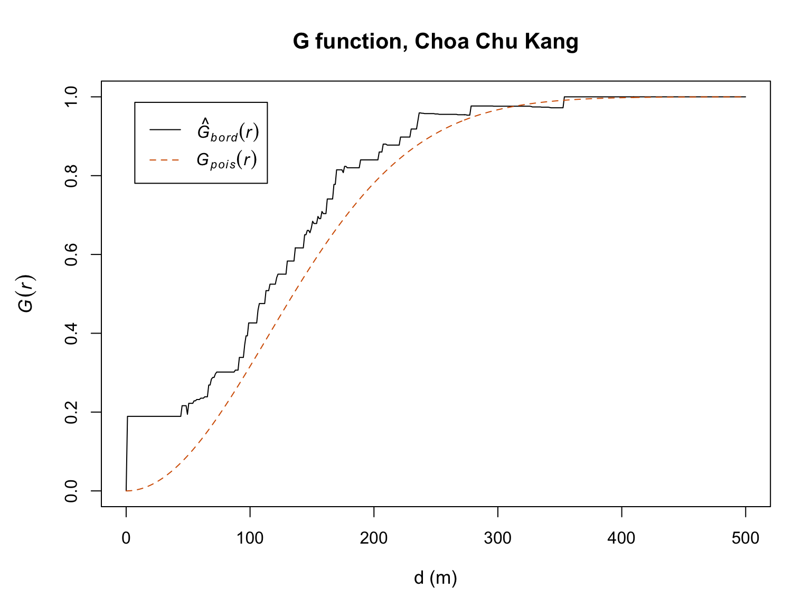
G_CK <- Gest(childcare_ck_ppp, correction = "border")
plot(G_CK, xlim = c(0, 500),
main = "G function, Choa Chu Kang")- H0: childcare centres in Choa Chu Kang are randomly distributed.
- H1: they are not.
Reject if p is below 0.001.
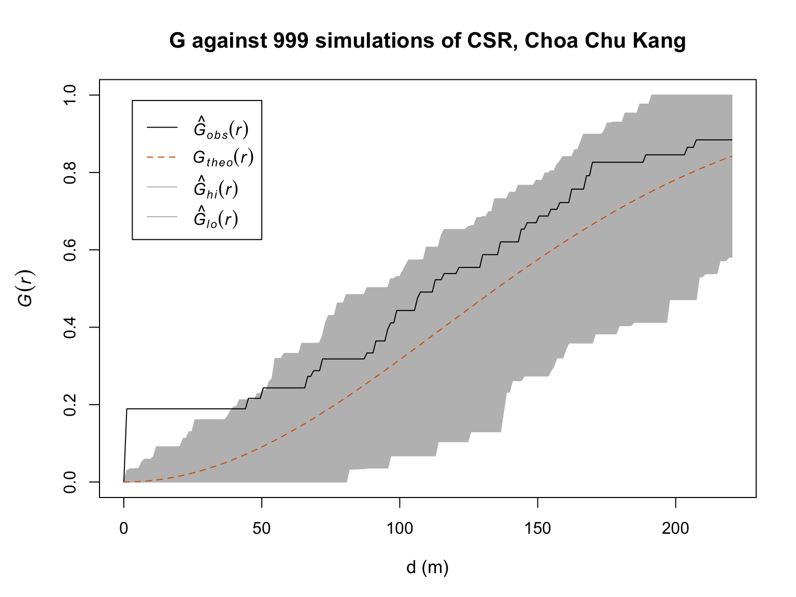
G_CK.csr <- envelope(childcare_ck_ppp, Gest, nsim = 999, verbose = FALSE)
plot(G_CK.csr, main = "G against 999 simulations of CSR, Choa Chu Kang")
CautionWhere I disagree with the exercise
The grey band is not a confidence interval, even though it is drawn like one and everyone reads it as one.
Floch et al. are explicit. “The envelope should not be interpreted as a confidence interval around the indicator being studied: it indicates the critical values of the test.” It is the range the simulated patterns covered, not a range of plausible values for my curve.
I have written the captions to say critical values rather than confidence, because the difference changes what the picture is claiming.
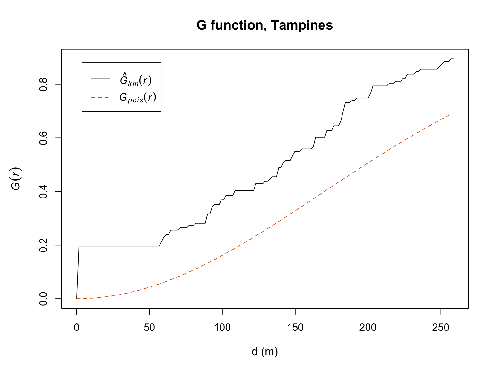
G_tm <- Gest(childcare_tm_ppp, correction = "best")
plot(G_tm, main = "G function, Tampines")3.2 F Function
F is the mirror image. Instead of measuring from each point to its nearest neighbour, it drops a grid of arbitrary locations and measures from each of those to the nearest point. It maps empty space rather than occupied space.
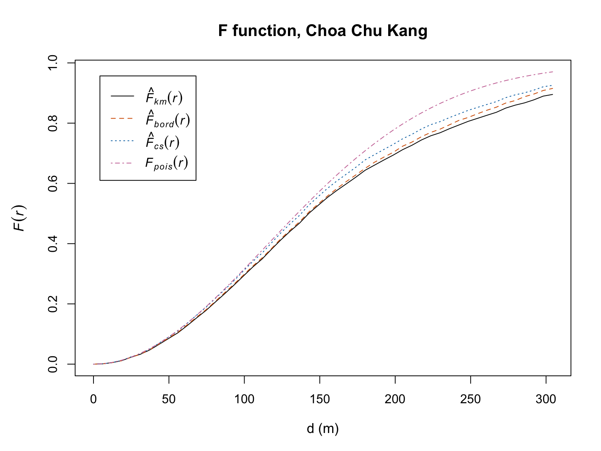
F_CK <- Fest(childcare_ck_ppp)
plot(F_CK, main = "F function, Choa Chu Kang")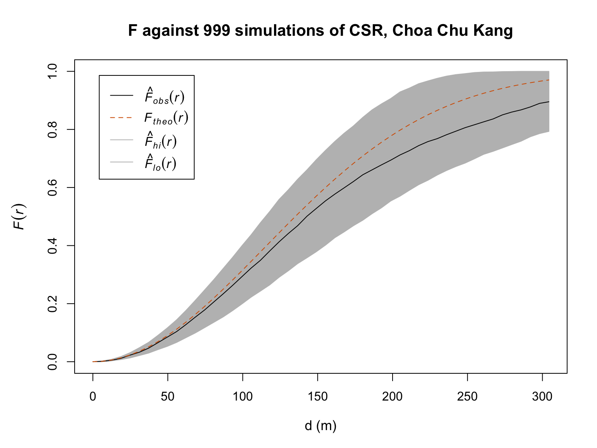
F_CK.csr <- envelope(childcare_ck_ppp, Fest, nsim = 999, verbose = FALSE)
plot(F_CK.csr, main = "F against 999 simulations of CSR, Choa Chu Kang")
NoteLearning diary
G and F point opposite ways for the same pattern, which confused me until I drew it out.
Clustered points have close neighbours, so G climbs fast. But clustering also leaves big empty gaps, so a random location is far from any point and F climbs slowly. Clustered means G above the line and F below it. Once I had that straight the two plots stopped looking contradictory.
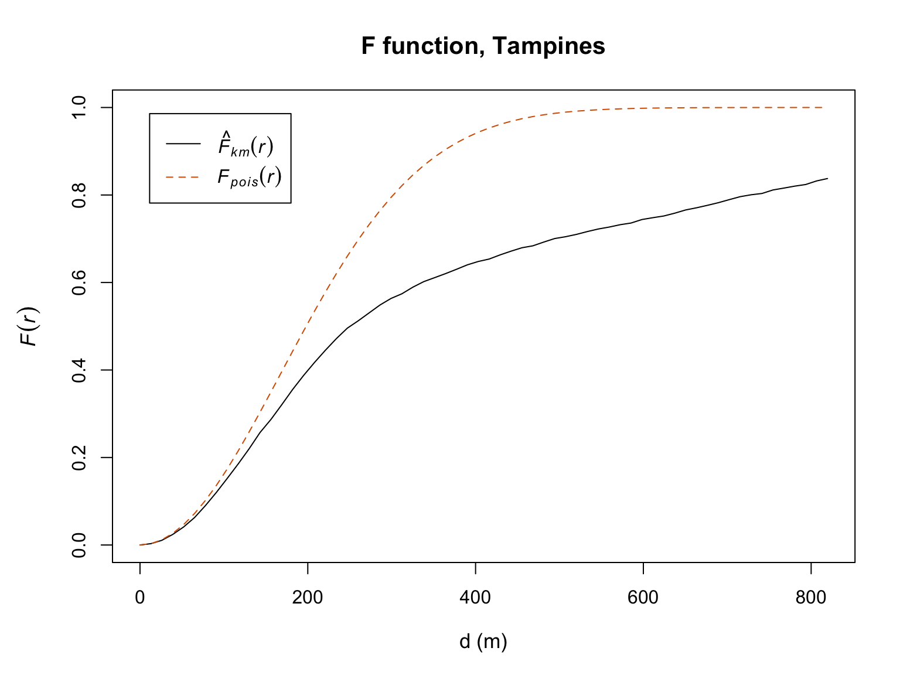
F_tm <- Fest(childcare_tm_ppp, correction = "best")
plot(F_tm, main = "F function, Tampines")3.3 K Function
G and F only look at the nearest neighbour. K counts every neighbour within distance r, for every r, so it works at all scales at once.
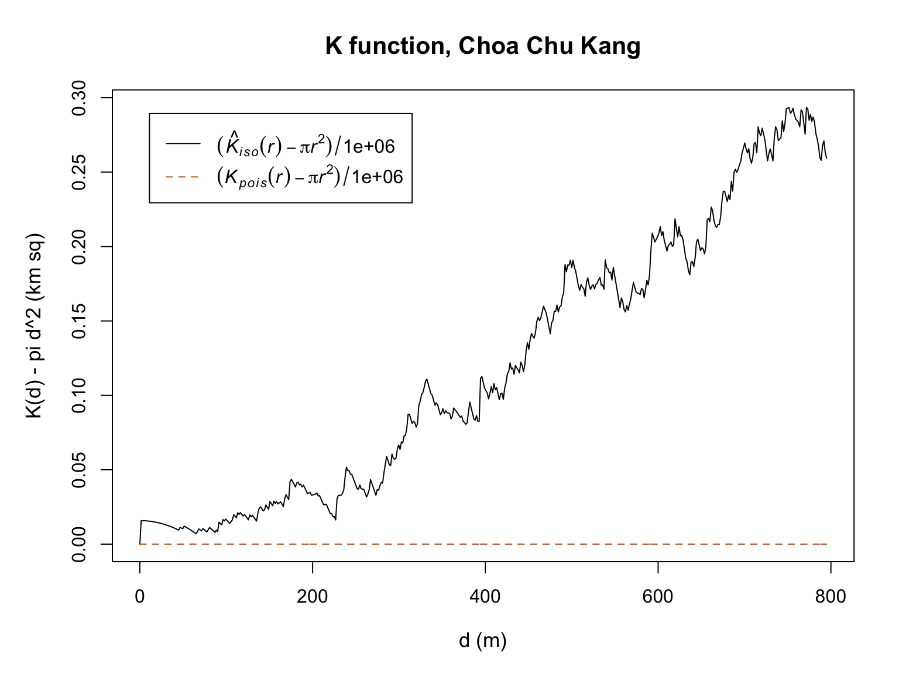
K_ck <- Kest(childcare_ck_ppp, correction = "Ripley")
plot(K_ck, . - r ~ r,
ylab = "K(d) - r", xlab = "d (m)",
main = "K function, Choa Chu Kang")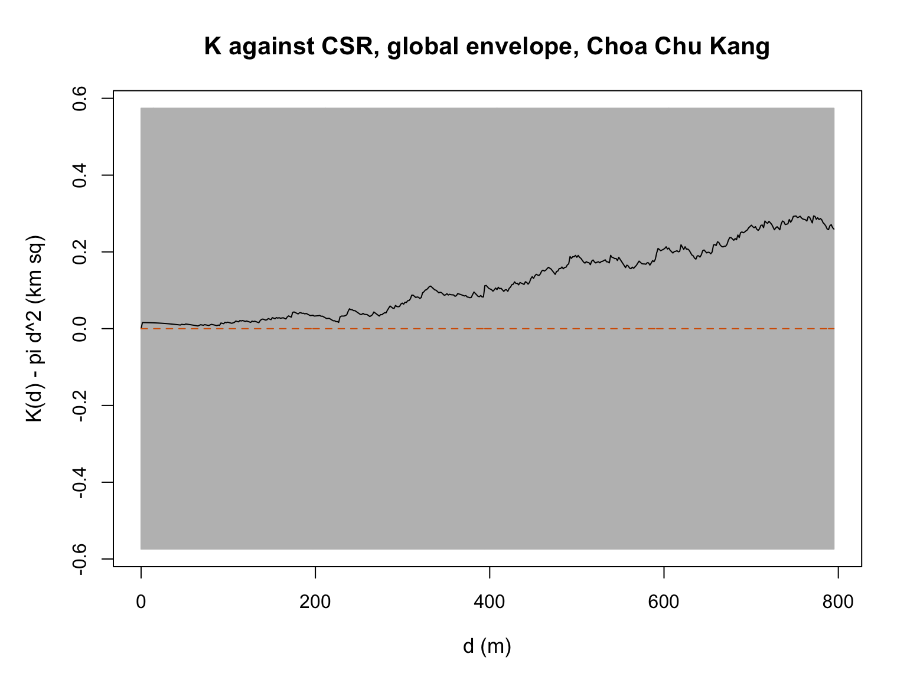
K_ck.csr <- envelope(childcare_ck_ppp, Kest, nsim = 99, rank = 1,
glocal = TRUE, verbose = FALSE)
plot(K_ck.csr, . - r ~ r, xlab = "d", ylab = "K(d) - r",
main = "K against CSR, global envelope, Choa Chu Kang")
WarningIssue I hit
glocal = TRUE appears here and for L, but not for G or F earlier. I copied it across without noticing, then went back to work out what it does.
The test is repeated at every value of r. Running the same test at dozens of values of r, then reporting the ones that cross, inflates the false positive rate well above the stated alpha. A global envelope corrects for that. A pointwise one does not.
So the G and F results above are on a weaker footing than the K and L results below, and the book never says so. I redo one of them properly in Part 3.
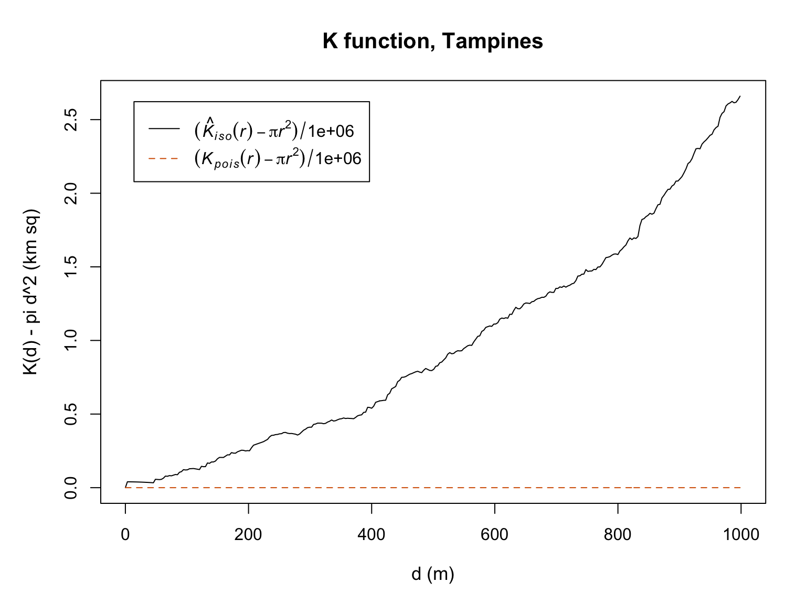
K_tm <- Kest(childcare_tm_ppp, correction = "Ripley")
plot(K_tm, . - r ~ r, ylab = "K(d) - r", xlab = "d (m)",
xlim = c(0, 1000), main = "K function, Tampines")3.4 L Function
L is K with the shape taken out. K under randomness grows as pi r squared, which is a curve and hard to eyeball. L is the square root of K over pi, so under randomness it is a straight line, and plotting L(r) - r makes randomness a flat line at zero.
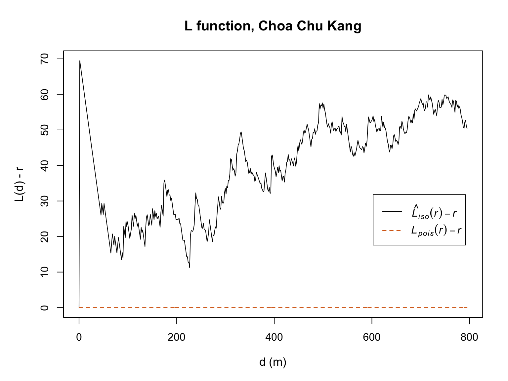
L_ck <- Lest(childcare_ck_ppp, correction = "Ripley")
plot(L_ck, . - r ~ r, ylab = "L(d) - r", xlab = "d (m)",
main = "L function, Choa Chu Kang")
NoteLearning diary
Floch et al. give the reading of L(r) - r that finally made it concrete for me. If the curve reaches 2 at a radius of 1, there are as many neighbours within 1 unit of each point as a random pattern would put within 3 units.
So the height of the curve is not an abstract test statistic. It is how much further you would have to walk, under randomness, to meet the same number of neighbours.
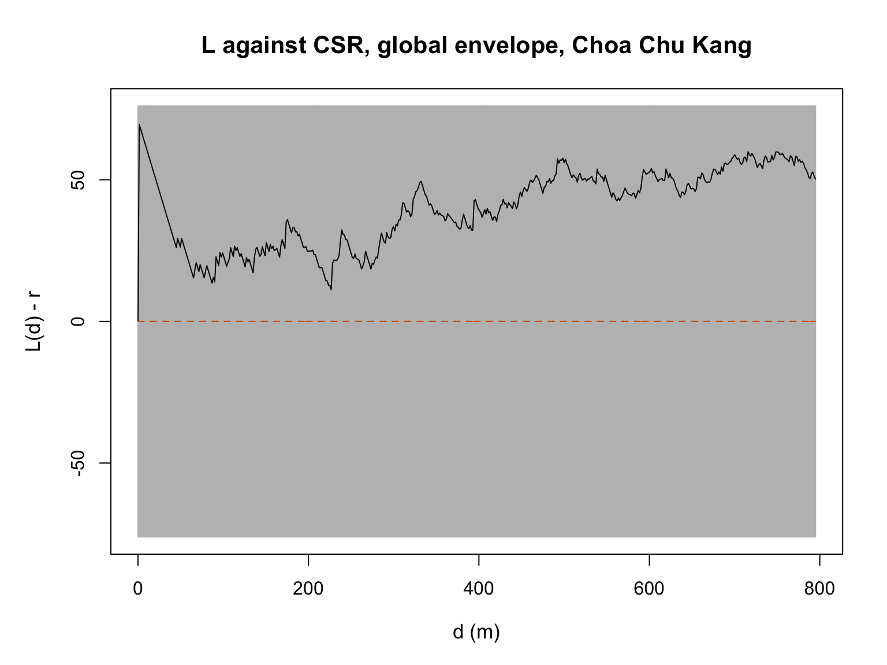
L_ck.csr <- envelope(childcare_ck_ppp, Lest, nsim = 99, rank = 1,
glocal = TRUE, verbose = FALSE)
plot(L_ck.csr, . - r ~ r, xlab = "d", ylab = "L(d) - r",
main = "L against CSR, global envelope, Choa Chu Kang")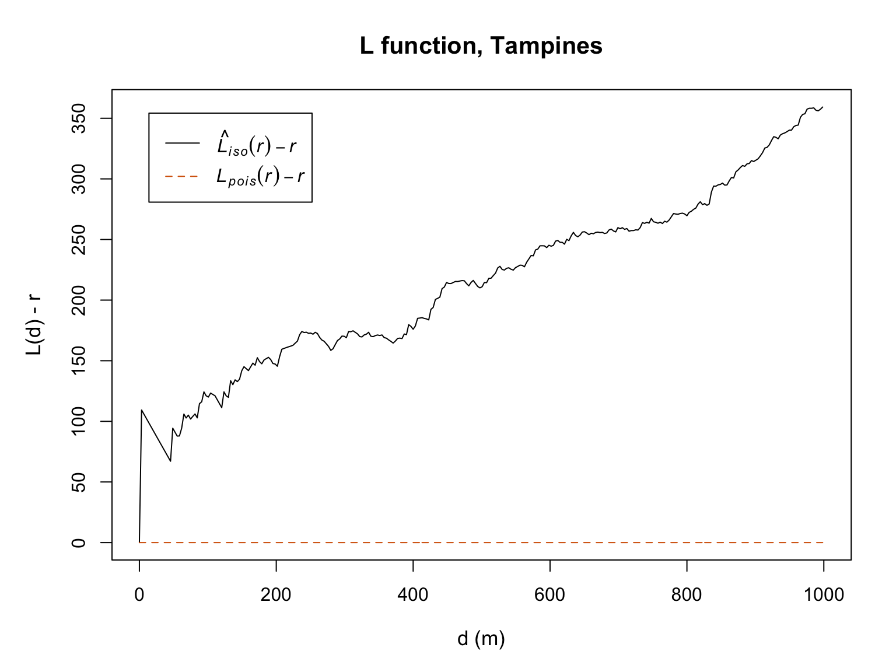
L_tm <- Lest(childcare_tm_ppp, correction = "Ripley")
plot(L_tm, . - r ~ r, ylab = "L(d) - r", xlab = "d (m)",
xlim = c(0, 1000), main = "L function, Tampines")4 Part 3, Beyond the Exercise
Four things bothered me by the end of Part 2. All of them came out of the required reading rather than from me.
4.1 Testing Against a Null That Is Not a Strawman
Everything so far compares childcare centres to a pattern where any point in Singapore is equally likely. Reservoirs, the airport, Jurong Island, military land.
Floch et al. raise this about pharmacies in France, whose siting is set by regulation tied to population, and say plainly that CSR “does not appear to be the most relevant” reference there. Childcare centres are the same kind of thing. They follow housing.
So the finding that they are clustered may be telling me only that Singapore’s residents are clustered, which I already knew.
The reading offers a fix. Kinhom() drops the assumption that intensity is constant and compares the pattern against a null with the intensity actually observed. If the centres still clump beyond that, the clustering is real. If they stop, it was population all along.
lambda_ck <- density(childcare_ck_ppp, sigma = bw.diggle, edge = TRUE)
range(lambda_ck$v, na.rm = TRUE)[1] 5.030384e-10 4.086766e-05
NoteLearning diary
My surface comes out entirely positive, so nothing here needs fixing. I am clamping anyway, and the reason is worth writing down.
Look at the book’s own output in section 4.7.1. Its density range starts at -6.58e-21. That is floating point noise from the edge correction rather than a real negative density, and it is invisible when you plot the surface.
It stops mattering right up until you feed the surface to rpoispp() for the simulation below, which refuses a negative intensity with a “negative probability” error that says nothing about where the negative came from. Whether you hit it depends on your data.
One line now is cheaper than working that out later.
lambda_pos <- lambda_ck
lambda_pos$v[lambda_pos$v < 0] <- 0
# confirm whether the clamp actually had anything to do
sum(lambda_ck$v < 0, na.rm = TRUE)[1] 0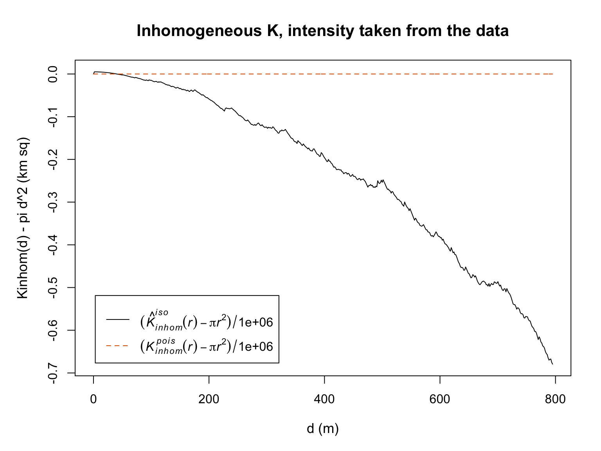
Kinhom_ck <- Kinhom(childcare_ck_ppp, lambda = lambda_pos,
correction = "Ripley")
plot(Kinhom_ck, . - r ~ r, ylab = "Kinhom(d) - r", xlab = "d (m)",
main = "Inhomogeneous K, intensity taken from the data")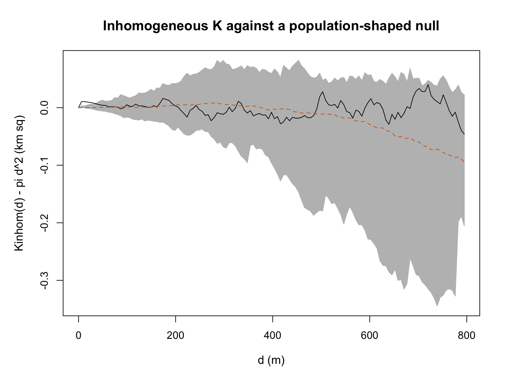
Kinhom_ck.csr <- envelope(childcare_ck_ppp, Kinhom,
simulate = expression(rpoispp(lambda_pos)),
nsim = 39, verbose = FALSE)
plot(Kinhom_ck.csr, . - r ~ r, xlab = "d", ylab = "Kinhom(d) - r",
main = "Inhomogeneous K against a population-shaped null")
TipAlternative explored
This is the same K function against a different question. Kest asks whether centres are more clustered than a uniform scatter. Kinhom asks whether they are more clustered than the local intensity already implies.
Compare this plot against the Kest one further up. Whatever gap remains here is clustering that population density does not explain, and that is the interesting part.
The caveat is that the null is estimated from the same data it is tested against, so it is not independent evidence. Floch et al. flag exactly this, warning that bias appears when the smoothing window is close in size to the r values being tested.
4.2 Cumulative Against Density
K counts every neighbour out to r. That is cumulative, so a bump at 400 metres could be caused by tight clustering at 50 metres that is still being carried along in the total.
The pair correlation function is the same idea measured in a ring at distance r rather than a disc out to r, so it shows where clustering actually happens rather than where it has accumulated.
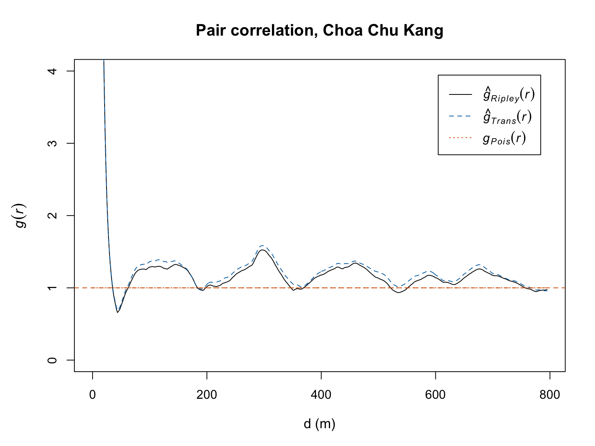
pcf_ck <- pcf(childcare_ck_ppp)
plot(pcf_ck, main = "Pair correlation, Choa Chu Kang",
xlab = "d (m)")
abline(h = 1, lty = 2, col = "#D55E00")
TipAlternative explored
Under randomness the pair correlation sits at 1, which is the dashed line. Above 1 means more neighbours at that exact distance than chance would give.
The advantage over K is that it localises. The disadvantage is that a cumulative function can spot clusters of clusters and a density function cannot. They answer different questions and neither replaces the other.
4.3 Redoing G With a Global Envelope
The G test in Part 2 used a pointwise envelope, which inflates the false positive rate across all the r values tested. Same test, corrected.
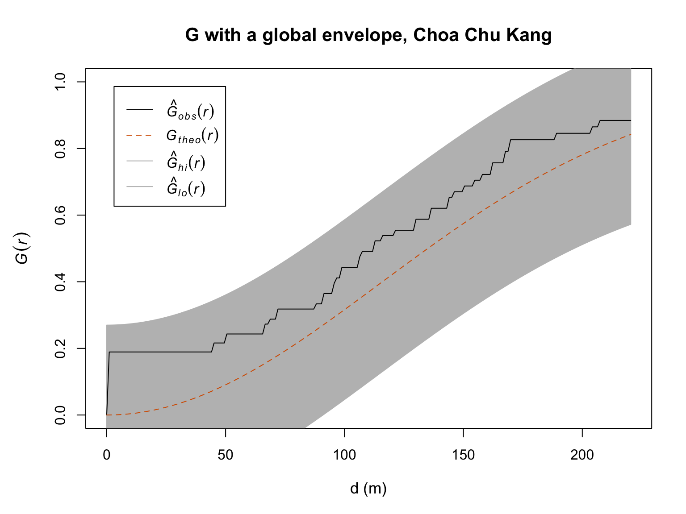
G_ck.global <- envelope(childcare_ck_ppp, Gest, nsim = 39, rank = 1,
global = TRUE, verbose = FALSE)
plot(G_ck.global, main = "G with a global envelope, Choa Chu Kang")
TipAlternative explored
The global band is wider than the pointwise one, which is the correction doing its job. It is harder to reject the null, and that is the point.
If the curve still leaves the band, the result survives the multiple testing problem. If it no longer does, the original finding was partly an artefact of testing at every r and reporting the crossings.
4.4 A Second Opinion on Randomness
Everything so far is distance based. A quadrat test is the other family, dividing the region into cells and comparing counts against a Poisson expectation.
quadrat_ck <- quadrat.test(childcare_ck_ppp, nx = 4, ny = 4)
quadrat_ck
Chi-squared test of CSR using quadrat counts
data: childcare_ck_ppp
X2 = 21.603, df = 12, p-value = 0.08444
alternative hypothesis: two.sided
Quadrats: 13 tiles (irregular windows)
WarningIssue I hit
I first stored this as qt, which is base R’s t-distribution quantile function. R refused with “cannot change value of locked binding”.
Same class of mistake as naming something c or df. Worth checking a name is free before using it.
ImportantCheck that caught it
The quadrat test does not agree with Clark-Evans, and that is the most useful result in Part 3.
Clark-Evans gave R of 0.84 with p of 0.0089, so it rejected randomness for Choa Chu Kang. The quadrat test on the same points gives p of 0.084, so it does not. Two tests, one dataset, opposite conclusions at the five percent level.
Neither is wrong. They measure different things. Clark-Evans looks at nearest neighbour distances, so it notices points sitting in tight pairs. The quadrat test only counts how many points fall in each cell, so a pattern can be clumpy inside cells and still spread evenly across them.
Note the tile count too. I asked for a four by four grid, so sixteen cells, and the output says thirteen tiles and twelve degrees of freedom. Three cells fell outside the planning area boundary and were dropped, and twelve is thirteen minus one. So the grid I specified is not the grid that was tested.
TipAlternative explored
The quadrat answer depends entirely on the grid I picked, and a different nx and ny would move it.
That is the Modifiable Areal Unit Problem again, the same thing I hit in Exercise 1 aggregating subzones up to planning areas. Avoiding it is one of the main reasons the reading gives for preferring distance-based methods.
4.5 Limitations
- Every test in Parts 1 and 2 uses CSR as the null, which for a facility that follows housing is a weak comparison. Part 3 addresses this for one planning area only, not the whole island.
- The
Kinhomnull is estimated from the same data it tests. It is a better question than CSR, not an independent one. - Simulation counts vary through the exercise, 99 here and 999 there, and each choice sets a different alpha.
- The four planning areas come from the book. They are not a sample of anything, so nothing here generalises to Singapore’s other planning areas.
- First and second order effects cannot be separated from a single observed pattern. That one is not fixable here and it undercuts the whole document, which is why it is also the second point in the reflections.
5 Reflections
Five things I am taking from this one.
The null hypothesis mattered more than the test did. Every result in Parts 1 and 2 compares childcare centres against a pattern that could put them in the middle of a reservoir. The tests came back clustered with tiny p-values, and I am not sure that told me anything beyond the fact that people live in some places and not others. Reading Floch et al. on French pharmacies is what made me see it, because the situation is identical.
The two chapters promise something they cannot deliver together. Chapter 4 is first order, intensity. Chapter 5 is second order, interaction. Floch et al. state that from a single observed pattern the two cannot be told apart, and cite work showing that natural advantage and genuine attraction produce indistinguishable results. So I can say the centres are clustered. I cannot say whether that is because they are drawn to the same places or drawn to each other.
Several arguments I was copying turned out to be decisions. The correction argument exists because of edge effects. glocal exists because testing at every r inflates the error rate. nsim sets alpha. None of these are formatting, and I had been treating all three as boilerplate to be pasted along with everything else.
Two methods disagreed and that was more useful than agreement. Clark-Evans rejected randomness for Choa Chu Kang and the quadrat test did not, on the same points at the same alpha. Working out why, that one reads distances between points and the other only counts them in boxes, taught me more about what each test can see than either result on its own.
The small stuff cost me more time than the concepts. A masking warning I ignored, and a variable name that collided with a base R function. Neither was hard. Both were invisible until something broke.